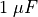
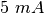

Redressement demi-onde à l’aide d’une jonction PN¶
Objectif
Étudier le fonctionnement d’une diode à jonction PN comme redresseur. Filtrage RC pour réduire les variations de tension (la composante alternative).


Procédure
- Faire les connexions et observer les sorties
- Connecter une résistance de charge de
 , noter le changement
d’amplitude
, noter le changement
d’amplitude - Connecter un condensateur de , et observer l’effet de filtrage.
- Essayer plusieurs valeurs de résistances de charge et de condensateurs de filtrage.
Discussion
La partie négative est ôtée par la diode comme montré sur la figure.
Noter aussi que la tension est diminuée de quelques 0,7 V dans la moitié
positive, c’est la chute de tension aux bornes de la diode silicium,
quand le courant y passe. Une résistance de charge est nécessaire pour
que le circuit fonctionne correctement, on peut utiliser plus de
, mais NE PAS utiliser de valeurs plus faibles, comme la source
courant alternatif ne peut pas fournir un courant de plus de .
On peut voir que le condensateur se charge puis qu’il maintient la tension pendant la partie manquante du cycle.
Peut-on utiliser des condensateurs de grande capacité pour réduire la fluctuation de tension ?
Durant quelle partie du cycle le courant traverse-t-il la diode ?
Qu’est qui conditionne la valeur du courant crête ?